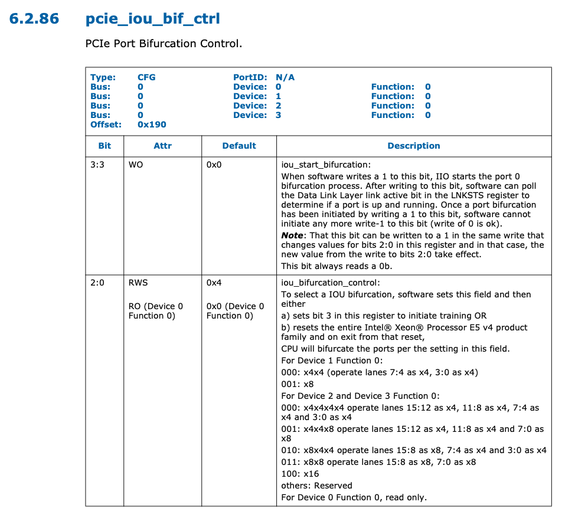

PCIe Bifurcation¶
本文的内容已经整合到知识库中。
背景¶
最近看到两篇关于 PCIe Bifurcation 的文章：
文章讲的是如何在 CPU 上进行跳线，从而实现 PCIe Bifurcation 的配置。正好借此机会来研究一下 PCIe Bifurcation。
PCIe Bifurcation¶
PCIe Bifurcation 的目的是让 PCIe 有更好的灵活性。从 CPU 出来的几路 PCIe，它的宽度一般是确定的，比如有一个 x16，但是实际使用的时候，想要接多个设备，例如把 x16 当成两个 x8 来用，这就是 PCIe Bifurcation。这需要 PCIe 两端的支持，CPU 端需要可配置 PCIe Bifurcation，不然只能从一个 x16 降级到一个 x8，剩下的 8x 就没法利用了；设备端需要拆分卡，把 x16 的信号分成两路，然后提供两个 PCIe 插槽以及使用 Clock Buffer 来提供下游设备的时钟，有时则是主板设计时就做了拆分，不需要额外的拆分卡。
那么怎么配置 CPU 端的 PCIe Bifurcation 呢？其实就是上面两篇文章提到的办法：CPU 根据 CFG 信号来决定 PCIe Bifurcation 配置，例如要选择 1x16，2x8 还是 1x8+2x4 等等。简单总结一下实现思路都是：
- 根据 CPU 型号（如 i7-12700K）找到 datasheet，如 12th Generation Intel Core Processors Datasheet Volume 1
- 寻找 datasheet 中关于 PCIe Bifurcation 的配置，找到 CFG 信号的取值
- 找到 CPU 的引脚定义图（如 LGA1700），找到 CFG 引脚，然后找到附近的地或者电源
- 连接跳线
具体细节这里就不赘述了，可以查看上面的两篇文章。
可配置性¶
这时候就有一个疑问了，如果 PCIe Bifurcation 配置是通过引脚输入的，一般电路是固定的，那是不是就不可以动态配置了？
桌面平台¶
实际找一个主板来研究一下。型号是 ASRock Fatal1ty Z97X Killer，从主板的描述中，可以看到：3 x PCI Express 3.0 x16 Slots (PCIE2/PCIE4/PCIE6: single at x16 (PCIE2); dual at x8 (PCIE2) / x8 (PCIE4); triple at x8 (PCIE2) / x4 (PCIE4) / x4 (PCIE6)，说明它是支持 PCIe Bifurcation 的，涉及到三个 PCIe Slot，支持三种模式：
- PCIE2 Slot x16
- PCIE2 Slot x8, PCIE4 Slot x8
- PCIE2 Slot x8, PCIE4 Slot x4, PCIE6 Slot x4
在 网上 找到该主板的 原理图，可以用 OpenBoardView 软件打开。这个主板上的 CPU 插槽是 LGA1150，找到一个兼容的 CPU 版本 i7-4771，下载 Datasheet，可以看到决定 PCIe Bifurcation 的引脚是 CFG[6:5]：
CFG[6:5]=00: 1x8, 2x4CFG[6:5]=10: 2x8CFG[6:5]=11: 1x16
可以看到，这三种配置和主板网站上描述的是一致的。既然主板支持 Bifurcation，说明一定有办法设置 CFG[6:5] 为以上三种取值。
接下来，要找到主板上怎么连接 CFG[6:5]。在原理图中，可以找到 LGA1150 的 U39 CPU_CFG5 和 U40 V_CFG6，继续往下找，可以看到它们通过电阻连到了同一个 BAT54C 芯片上，所以只需要看 BAT54C 第三个引脚 N105955695 的电平。N105955695 接到了一个 2N7002BKS 芯片上，根据电路图，最后是要看 X4_PRSNT1# 信号。
X4_PRSTN1# 信号连接到了 PCIE6 上，如果 PCIE6 Slot 插入了设备，那么 X4_PRSTN1# 信号生效，根据分析出来的电路，它会使得 CFG[6:0] 变为 00，对应 1x8+2x4 的 Bifurcation 模式。回想一下，在主板支持的三种 PCIe Bifurcation 模式下，只有这一种涉及到了 PCIE6 Slot。所以如果用户在 PCIE6 Slot 插入了设备，那说明用户需要的是 1x8+2x4 的模式，自动配置 CPU 的 CFG[6:5] 信号为预期值。
另一方面，设置 CFG[6:5] 还不够，上面提到过，主板需要负责把 PCIE2/4/6 的信号连接到原来的完整的 x16 上，并且根据实际情况连接不同的线。具体的实现方式也可以在原理图中找到：信号 X4_PRSTN1# 连接到了 CBTL04083BBS，这是一个 PCIe Mux/Demux 芯片，也就是把同样一组差分线连到不同 PCIe Slot 上所需要的芯片。
于是目前推断出了一部分的工作原理：用户在 PCIE6 Slot 插入设备，电路计算出 CFG[6:5]=00，同时配置好了 PCIe Mux/Demux 芯片，把 1x16 切分为 1x8+2x4。
继续往下看，主板如何实现剩下两种配置：CFG[6:5]=10 对应 2x8，CFG[6:5]=11 对应 1x16。这两种编码里，CFG6 都为 1，只需要考虑如何处理 CFG5。CFG5 除了连接上面提到的 BAT54C 以外，还通过另一个 2N7002BKS 芯片连接到了 NB_X8_PRSENT# 信号上。如果你想明白了前面的过程，应该可以推断出来，这里的 NB_X8_PRSENT# 连接到了 PCIE4 Slot 上。当 PCIE4 Slot 插入了设备，同时 PCIE6 Slot 没有插入设备，那么根据相应的 PRESENT 信号，可以得到 CFG[6:5]=10。如果 PCIE4 Slot 和 PCIE6 Slot 都没有插入设备，那就 CFG[6:5]=11。
总结一下，动态检测并计算出 CFG[6:5] 的逻辑：
- 如果 PCIE6 Slot 插入了设备，说明要配置为 1x8+2x4，设置
CFG[6:5]=00 - 否则，如果 PCIE4 Slot 插入了设备，说明要配置为 2x8，设置
CFG[6:5]=10 - 否则，说明要配置为 1x16，设置
CFG[6:5]=11
而主板设计者就是要把这个逻辑转化为电路，用 BAT54C 和 CBTL04083BBS 芯片来实现逻辑运算。
顺便一提，这里的 PCIE2/4/6 物理尺寸都是 x16，只不过实际分配到的宽度不一定与物理尺寸一致。
服务器平台¶
在服务器平台上，Intel CPU 的 Bifurcation 变成运行时可配置的，例如在 Xeon E5 v4 Datasheet Volume 2 中，可以找到寄存器 pcie_iou_bif_ctrl 寄存器的定义：

这个寄存器在 PCIe 配置空间中，可以通过 setpci 命令来读取或写入：
$ setpci -s 00:00.0 190.B
00
$ setpci -s 00:01.0 190.B
01 # x8
$ setpci -s 00:02.0 190.B
04 # x16
$ setpci -s 00:03.0 190.B
03 # x8x8
$ setpci -s 80:02.0 190.B
04 # x16
通过 lspci -bPP 命令以及 lspci -vvv，可以看到在这几个 PCIe Root Port 下的设备以及速度：
- 00:01.0(x8)/02:00.0 RAID 控制器 PCIe 3.0 x8
- 00:02.0(x16)/03:00.0 NVIDIA 显卡 PCIe 3.0 x16
- 00:03.0(x8x8)/01:00.0 BCM 2x10G+2x1G 网卡 PCIe 2.0 x8
- 80:02.0(x16)/82:00.0 NVIDIA 显卡 PCIe 3.0 x16
其中前三个设备连接到 CPU1，后三个设备连接到 CPU2
在 BIOS 设置中，进入 Integrated Devices -> Slot Bifurcation 可以看到设置，可选项有：
- Slot 1/2/3/5: Default Bifurcation, x4+x4 Bifurcation
- Slot 4/6: Default Bifurcation, x4+x4+x4+x4 Bifurcation, x8+x8 Bifurcation
阅读 R730 文档，可以发现它最多可以有 7 个 Slot，其中 Slot 1/2/3/5/7 是 PCIe 3.0x8，Slot 4 是 PCIe 3.0 x16，Slot 6 根据不同的 Riser 可以提供 PCIe 3.0 x8 或 x16，对应关系如下：
- PCIe Slot 1: x8, CPU2
- PCIe Slot 2: x8, CPU2
- PCIe Slot 3: x8, CPU2
- PCIe Slot 4: x16, CPU2
- PCIe Slot 5: x8, CPU1
- PCIe Slot 6: x8/x16, CPU1
- PCIe Slot 7: x8, CPU1
阅读 E5 v4 CPU 文档，可以发现它有三个 PCIe Port，一共有 40 PCIe lanes（x8+x16+x16）。由此可知，其中一个 x16 连接到 Slot4/6 上，另一个 x16 拆分成 x8+x8，连接到其余的 Slot。有些奇怪的是 CPU1 少了一个 x8 不知去向，怀疑是连接到了 RAID 卡或者网卡上。缺少主板的原理图，无法继续深入研究。
遗憾的是，这个寄存器的 iou_start_bifurcation 字段只能写入一次 1 来初始化 Bifurcation，而这一般是由 BIOS 完成的。如果 BIOS 没有做，或许可以后面再写入一次；如果 BIOS 已经写入了，但是没有提供可选项，那么可以考虑逆向 BIOS，使用 UEFITool 查看是否有隐藏的配置，如果有，则可以尝试绕过 BIOS 设置去修改隐藏的配置，如果没有，可以考虑修改 BIOS 的指令。
总结¶
简单总结一下，PCIe Bifurcation 的目的是保证总 lane 数不变的情况下，连接更多设备的较低成本的方法。它需要 CPU 一侧和设备一侧的支持。桌面级别的 CPU 通过 CFG 信号来配置，服务器端的 CPU 通过 PCIe 配置空间来配置。设备一侧，可以由主板进行拆分，此时主板上会有多余的 PCIe 接口，根据插在主板上的设备的情况，主板自适应出一个 PCIe Bifurcation 配置；主板也可以什么都不做，直接把 CPU 的 PCIe 接到 Slot 上，此时需要用户自己购买 PCIe 拆分卡。淘宝上可以搜到不少 PCIe 拆分卡，其中用于 NVMe 的较多，毕竟 M.2 接口面积小，而且只需要 PCIe x4。
另一种方案是 PCIe 交换机（如 PEX 8747），缺点是成本较高，增加了延迟，好处是灵活性很强，不需要 CPU 额外配置，可以外接更多设备，并且设备空闲时可以让出带宽。例如一个 x16 使用 Bifurcation 方法可以拆成两个 x8，也可以使用 PCIe 交换机连接两个 x16，类似网络，这两个 x16 共享带宽，下游的两个设备之间也可以直接通信，这个在 HPC 场景下会比较常见，例如使用 PCIe 交换机连接显卡和 IB 网卡。